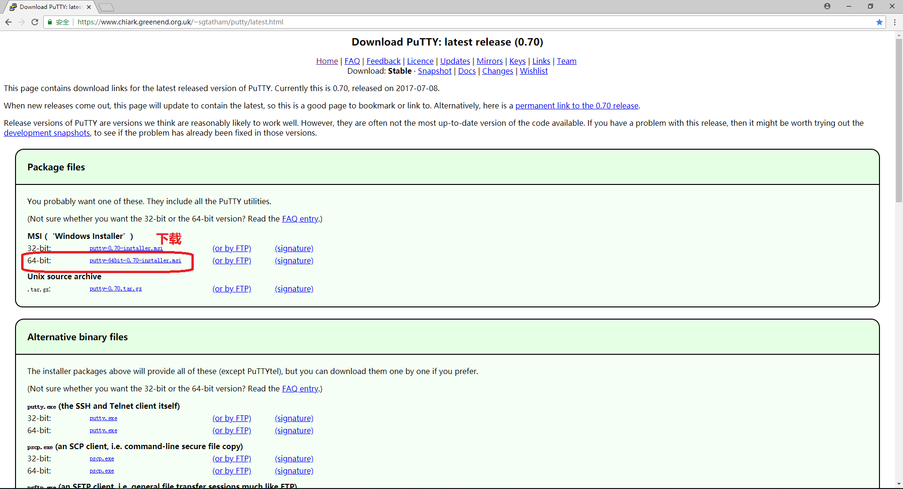
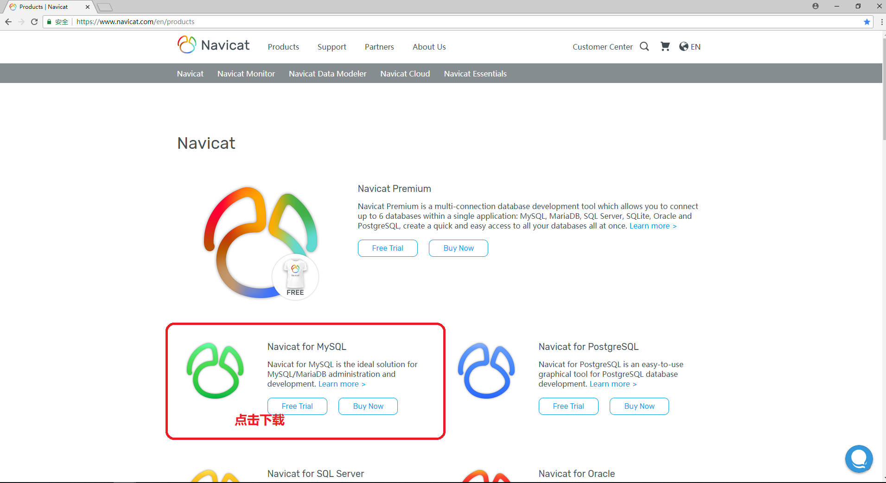
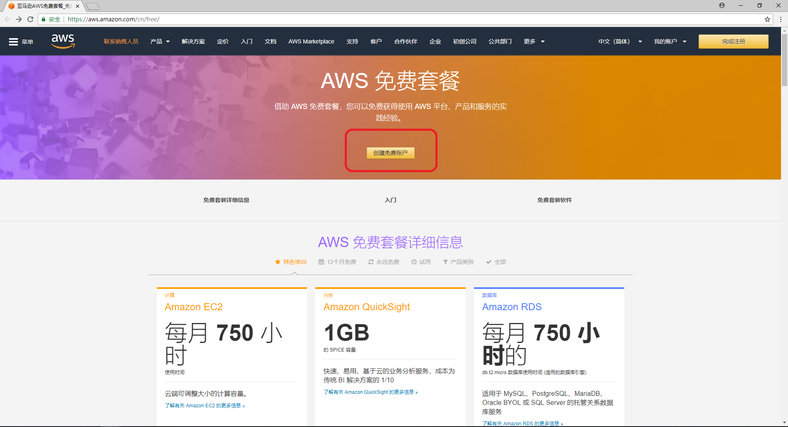

从零开始利用AWS来快速搭建WordPress平台---准备篇
AWS全称Amazon Web Service，它是亚马逊提供的一项云服务，同时也是现今最强大的云平台之一。下面主要来介绍如何手动配置，从零开始利用AWS来快速搭建WordPress平台。目前，网上查询到的相关教程都比较零碎，而且很多信息都已经过时。
对于Linux系统以及服务器配置并不熟悉的人（如笔者）来说，通过阅读这些教程或经验来完成想要的功能简直无从下手。本篇主要介绍手动搭建前的准备事项：常用工具与AWS账户注册。
常用工具 很显然，利用AWS从零开始搭建WordPress平台，不可避免需要很多工具。这里先给出常用的工具，会在接下来的搭建过程中用到。 1. Windows系统下通过SSH连接亚马逊AWS服务器的 Putty，可在官网下载相应的版本并安装，这里以64位的windows版本为例，如下图所示  2. 远程连接MySQL的工具 Navicat for MySQL，可在官网下载试用版，并安装（相应破解版自行检索）

注册AWS号 安装好了上述常用工具，下面需要注册AWS账号。亚马逊提供12个月的免费套餐，通过此链接你可以了解此免费套餐相关信息。但此免费套餐并不是绝对的免费，而是给了一定的使用额度。一旦超出了免费额度就会扣费，不过对于个人使用的小站来说，基本不会出现超出额度的情况。
一般多关注以下几个方面即可 1. Amazon EC2免费套餐规定不管是Linux或者Windows，每个月都只有750个小时的运行时间，而一个月即便算31天也只有744个小时，也就是说一般在 运行时长 上面是不会扣钱的。 2. 唯一导致你可能在Amazon EC2的运行时长上扣钱的应该是你创建了一个以上的实例。如果只是创建了唯一一个 实例 ，每个月都不用担心运行时长。 3. 750个小时负载均衡器使用时间，流量 是15GB，一般用在你开多个实例的时候出现，如果用超了就要付钱了。 4. Amazon EC2部分服务是收费的，这些我们在创建实例时就可以看到，要特别小心。创建实例时会有明显的提示，如果选择的服务不符合 免费政策 ，那么就会在页面左侧提醒你，一定要瞪大眼睛看好。
可以通过具体页面，查看流量、硬盘读写、运行时长等相关信息。 进入账户创建页面，点击右上角的创建免费账户，如下图所示  进入账户创建流程后，按照提示一步一步完成就可以了，这里就不再赘述了。
特别提醒 1. 电话要填写真实的号码，因为亚马逊会打电话过来让你输入网页上显示的验证码来验证信息，这个电话里说的是英语，不过不用管，等她说完了，你把页面上显示的几位数字在电话上按出来就OK了，然后你的网页就会自动显示验证通过了。 2. 信用卡信息要填写正确，因为会自动扣掉1美元来验证你的账户信息是否可用。
- 如果在注册账户过程中有问题，可以参考以下链接，主要以亚马逊AWS官网为主
参考来源 在亚马逊AWS服务器上搭建WordPress站点的基本教程_建站经验_网站运营_脚本之家 用 AWS EC2+RDS 搭建WordPress （一）基础介绍
您也可以请我喝一杯咖啡,支持我的创作~ 比特币（BTC）:1FLHDgSp76u3CoasTF7fDyYBooGv8Frh5f 比特币现金（BCH）:1FLHDgSp76u3CoasTF7fDyYBooGv8Frh5f Ethereum (ETH): 0x5061c5ddeb4f82e3070a4bd593d2b1cc90d1bfc4